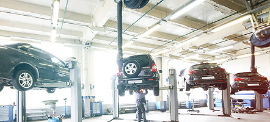
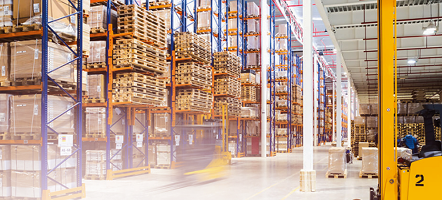

Справжні професіонали на ринку стартерів та генераторів

Мережа СТЦ
Ремонт стартерів,
генераторів, кондиціонері

Інтернет-магазин
Понад 15 000 позицій
агрегатів та компонентів
Готові рішення
Готові рішення
в стар-ген сегменті для СТО
У нас представлений широкий асортимент запчастин та комплектуючих для вантажних та легкових авто,
сільськогосподарських
машин, водомоторної техніки, а також мотоциклів та промислового сектору ринку.